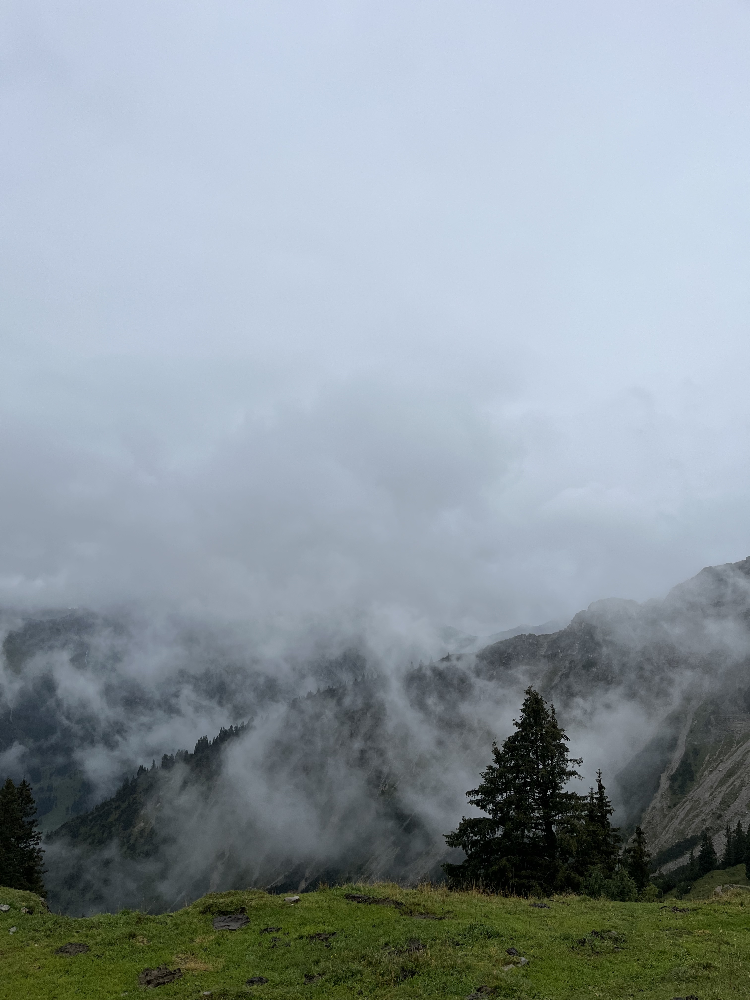
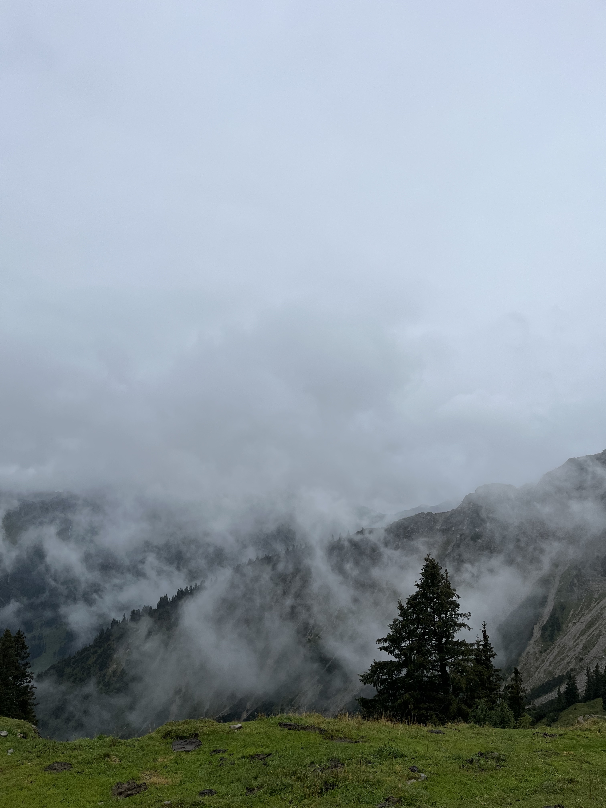
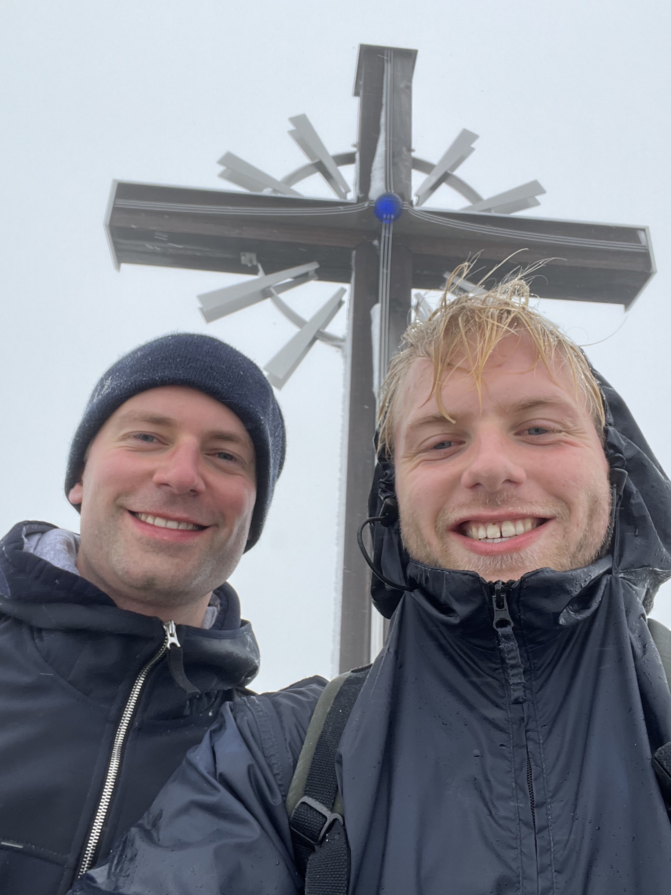
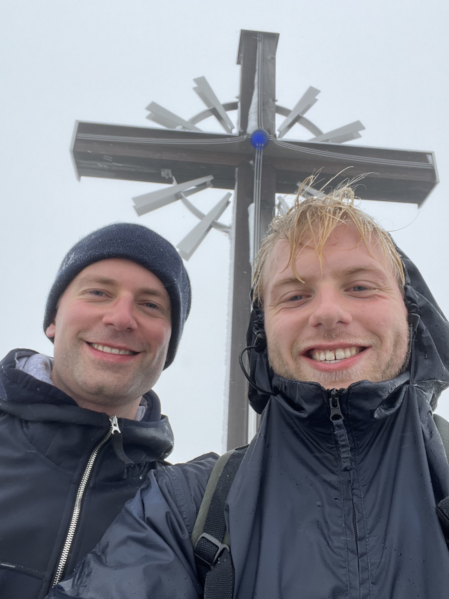
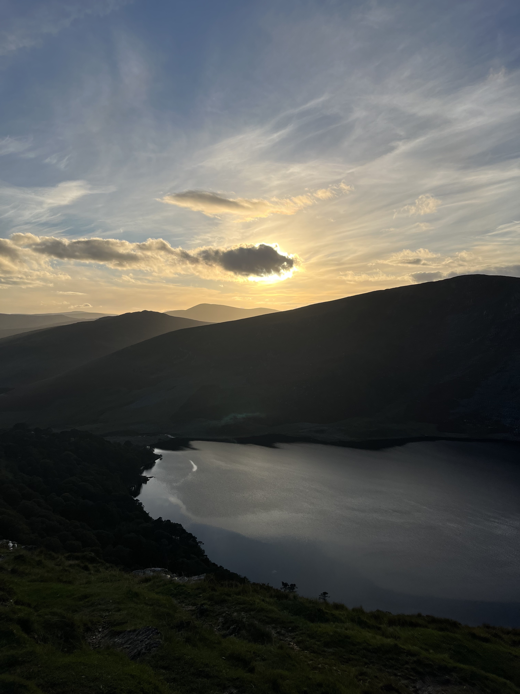
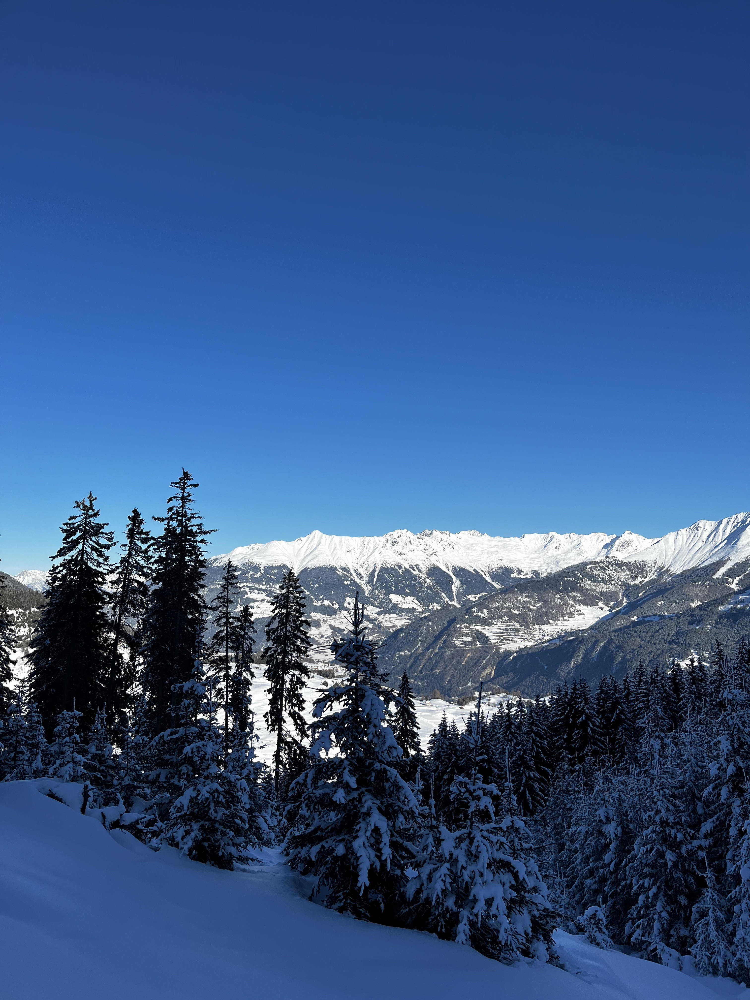
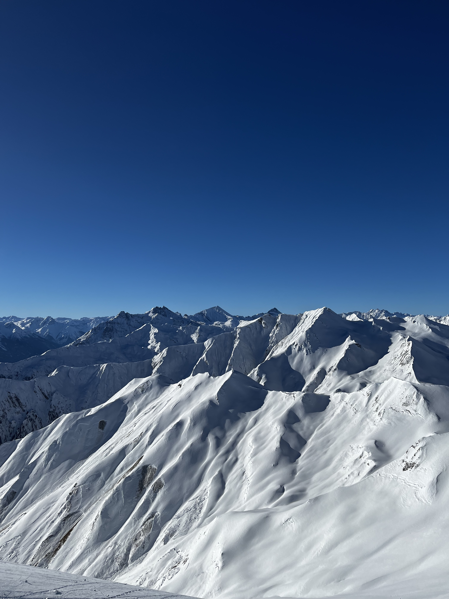

More About Me
Find out more about me and my hobbies.
Hiking
One fact about me is that I was born and raised in Hamburg. Hamburg is a city in the north of Germany. The surrounding area is generally very flat, without any mountains. That's why I always tended to do water sports in my childhood, like rowing, but I never went to the mountains.
That changed in 2020 when I moved to Reutlingen, in the south of Germany, to study. It didn't take long for me to fall in love with the mountains. Hiking is now a big hobby of mine.
In 2022, together with my brother, I climbed the Gaishorn, a 2,249 meter high mountain in Bavaria.
 

The climb started really easy, and we were able to enjoy a great view.
The weather changed during the ascent, however, which made the climb a real adventure. When we arrived at the summit, we only had a visibility of max. 20 meters. Since we could see anything and were completely soaked, we decided to climb back down after only a short period.
 

I also enjoy hiking in Ireland. Although there are no real mountains here, the nature is still very beautiful. Ireland offers many great National Parks that are worth a visit.

Skiing
In January 2024, I went skiing for the first time in my life. I'm still very shaky on skis, but I'm already looking forward to the next season.
 During the summer of 2024, after I graduate from DCU, I plan to do cross the alps together with my girlfriend, who is also into hiking. We plan to start in Spitzingsee (Bavaria), and hike to Sterzing in South Tyrol. This route will take us about 6 days and we will cover a distance of 91 kilometers and about 2,700 altitude meters.